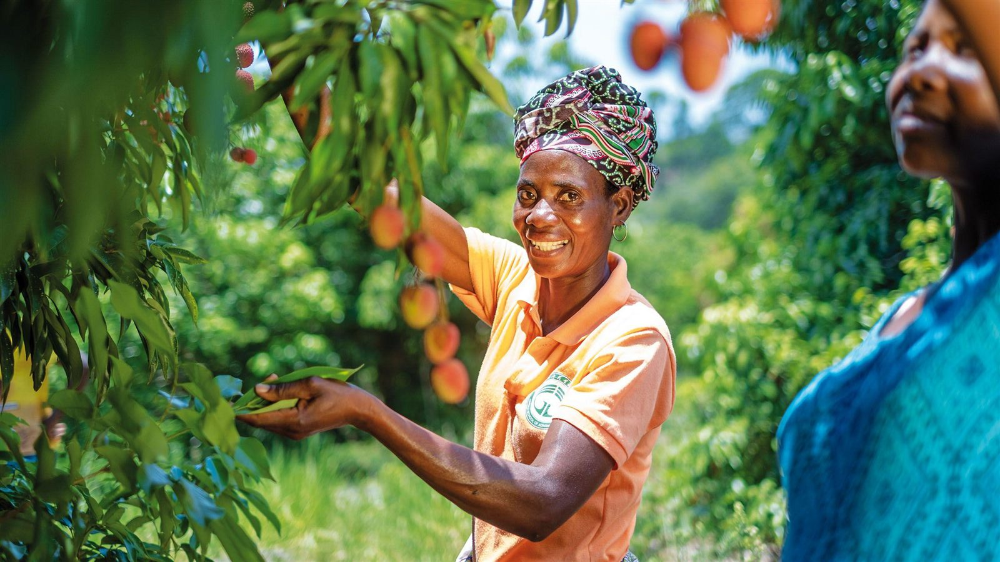

Fruit trees
Supporting fruit tree planting and orchard care in schools and community spaces.
Community-led change · Busia, Uganda
We work alongside communities to grow fruit trees, share practical agricultural skills, and create opportunities for women and young people.

Our work at a glance
Our projects bring environmental care together with practical learning and community participation.
Supporting fruit tree planting and orchard care in schools and community spaces.
Sharing agricultural knowledge with women, young people, and local groups.
Working with schools, local leaders, and families to sustain the work together.
Featured projects

Schools · Busia District
Planting and caring for fruit trees with schools and other public institutions.
Explore project
Communities · Busia District
Working with local communities to establish and care for fruit trees.
Explore project
Women & wellbeing · Busia District
Connecting agricultural learning with nutrition and community health awareness.
Explore projectLooking ahead
These are ideas to explore with communities and partners, not funded or scheduled commitments.
Explore new school planting sites and agree on a care plan with each school before trees go into the ground.
Develop hands-on sessions on seedlings, watering, and orchard care with women, young people, and local caretakers.
Record planting dates, places, species, and follow-up visits so communities and supporters can see how projects progress.


From the field
Planting days, school activities, and community gatherings connect people around a shared goal: healthier landscapes and stronger local opportunities.
See photos from our workInteractive experience
Tap the virtual tree or use the button below. Watch it grow on your screen, one tap at a time.
Your virtual seed is ready.
0 of 12 growth taps
This is a virtual experience. Tapping does not fund or plant a physical tree.
See our real orchard workGet involved
Support a project, share your time, or start a conversation about working together.
Help sustain orchard planting and community training.
Ways to supportTell us how you would like to contribute your time and skills.
Volunteer with usExplore a school, community, or organizational partnership.
Start a conversation